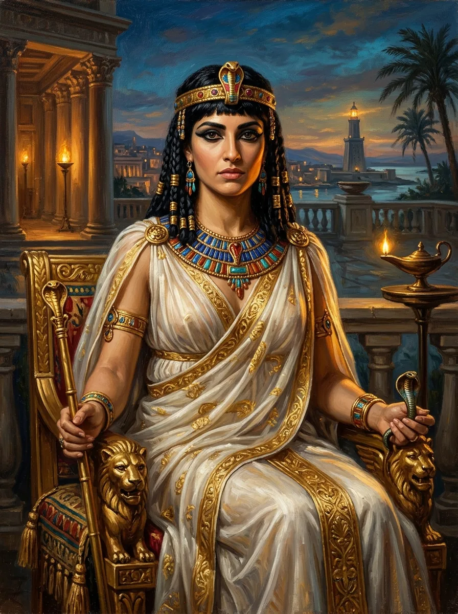

Women, Power &
Personality
A historical journey through the minds, choices, and contradictions of extraordinary women—examining how power, gender norms, and psychological traits shaped history.
Cleopatra VII
Last active ruler of the Ptolemaic Kingdom of Egypt. Roman propaganda framed her political ambition as moral and emotional excess, masking her multilingual statecraft and strategic brilliance.
من هرگز به عنوان غنیمت در رژه پیروزی دشمن به نمایش گذاشته نخواهم شد.”

THEMES
TIME PERIODS
Mind
Through
Time
From ancient humoral theories and the gendered myth of "Hysteria" to modern dimensional personality models (DSM-5-TR & ICD-11), explore how psychiatry interpreted female power and non-conformity.
THE EVOLUTION OF PERSONALITY THEORIES & TRAIT INTERPRETATION
Click any psychological dimension on the right to highlight its historical trajectory.
Deep Dive
Explore detailed profiles, DSM-5-TR dimensional trait analysis, and historical historiography for each woman.